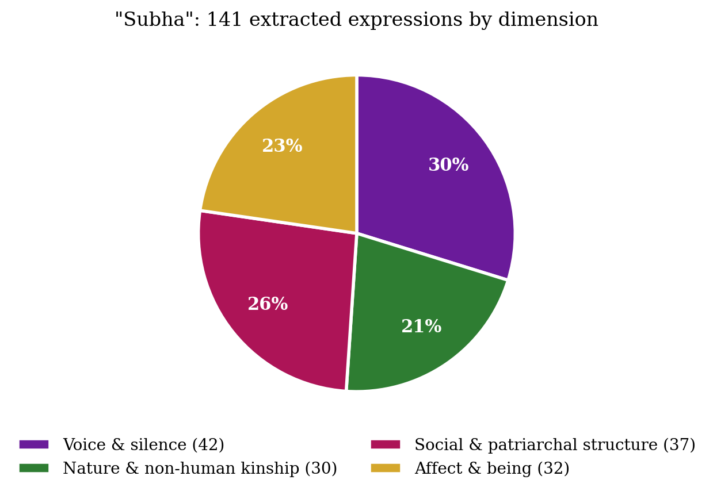
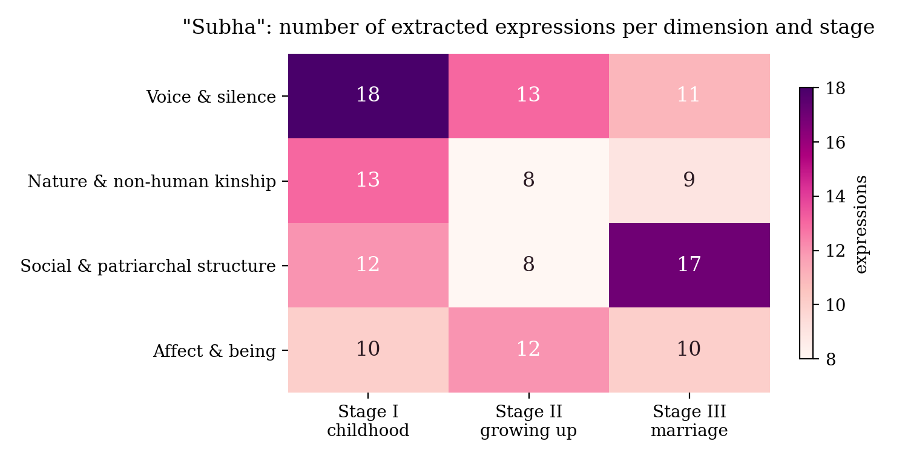
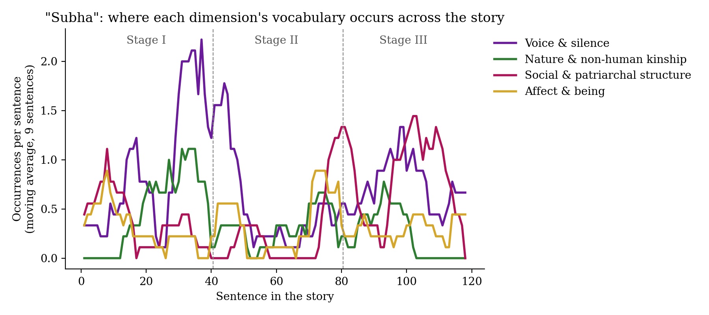
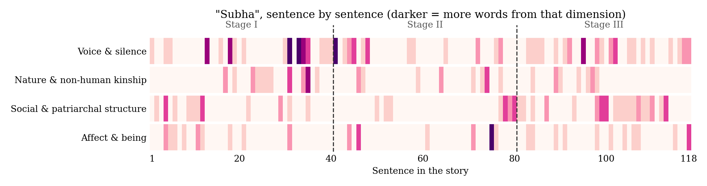

Assignment 03
A Synthetic Reading of Tagore’s “Subha”
Abstract. “Subha” is Tagore’s story of a mute village girl whose family treats her as a “silent weight” and marries her off in Calcutta without telling anyone she cannot speak. I read only a fifth of it first, wrote down a hypothesis about voice, silence and nature, and then tested it on the whole story with a local LLM and some charts.
The story in three moments
- Sentences 1–40
Childhood in Chandipur
Subha cannot speak, and her family treats her as a burden. Her real companions are the river, two cows and a kitten.
“they understood her gentle murmuring better than all speech.”Sentence 39
- Sentences 41–80
The marriage is arranged
She grows up, her friendship with Pratap goes nowhere, and the village starts to talk about her parents.
“People blamed them, and even talked of making them outcasts.”Sentence 79
- Sentences 81–118
The wedding and Calcutta
She is married to a man who is not told that she is mute, and is taken away from everything she knew.
“only the Searcher of Hearts could hear.”Sentence 118
Method
I followed the seven steps of synthetic reading from Ghosh, Shanmugapriya T and Mandal (2026):
- Partial reading20% of each third of the story: 24 of 118 sentences.
- Research problemA question, my positionality and frameworks.
- Full textThe 1918 English translation, cleaned.
- PromptA detailed prompt for the local LLM.
- ExtractionThe model’s expressions, checked and sorted by me.
- VisualisationCharts of where each theme appears.
- InterpretationReading the charts with theory.
After the partial reading, this is what I set out to test:
“Across the three stages of the story, Subha’s language moves from being understood by a non-human community to being unheard altogether, and the vocabulary of nature gives way to the vocabulary of social and patriarchal structure.”
My first impressions and positionality are in initial_impression.md.
Findings
Explore the story
Each tile is one sentence of the story. Click a tile to read it, with its theme words highlighted. Pick a theme to see where it appears; try Nature and kinship and look at the end of Stage III.
Stage I: childhood in Chandipur (sentences 1–40)
Stage II: growing up, the marriage is arranged (sentences 41–80)
Stage III: the wedding and Calcutta (sentences 81–118)
sentences I read in the partial readingdarker tile = more theme words
Charts




- Voice and nature peak together in the first part, where “there were only dumb Nature and a dumb girl”.
- Words about family, marriage and value rise when the marriage is arranged and are highest in the last part (17).
- Nature words come back once, when Subha says goodbye to the river and the cows, and stop completely after sentence 98.
So the hypothesis mostly holds, with one correction. Nature does not fade slowly; it disappears when Subha leaves her village.
My interpretation
What Subha loses depends on where she is, not on her age. The river and the cows were the only ones who understood her, and marriage takes her away from them.
Spivak’s “Can the Subaltern Speak?” helped me put this into words. Subha does have a language; her eyes “told them everything, though no one understood her.” The problem is that nobody is willing to listen, and her family’s belief that “because she did not speak, therefore she did not feel” is what Spivak calls epistemic violence.
The last part of the story talks about her the way you would talk about goods: a “useful possession”, her value “increased”, “delivered over into another’s hands”. Gayle Rubin’s idea of the “traffic in women” fits this closely. And the closeness to nature that comforted her ends up describing her capture. When Pratap jokes about her wedding, she looks at him the way “a stricken doe looks in the hunter’s face”.
Limitations
- I read an anonymous 1918 English translation, not Tagore’s Bengali.
- The numbers are small (141 expressions in about 2,250 words), so the charts show tendencies, not proof.
- The four categories are my own, and I corrected the model’s lists by hand. My research question shaped what was found, which the method asks the reader to say openly.
- The model’s first run failed (it started copying the text). I kept it in the repository.
Files
partial_reading.txt: the 20% I read firstinitial_impression.md: research problem and positionalityprompt.txt: the prompt for the LLMsubha_themes.py: the extracted and sorted themesvisualise.py: the chartsinterpretation.md: the full interpretation with works cited